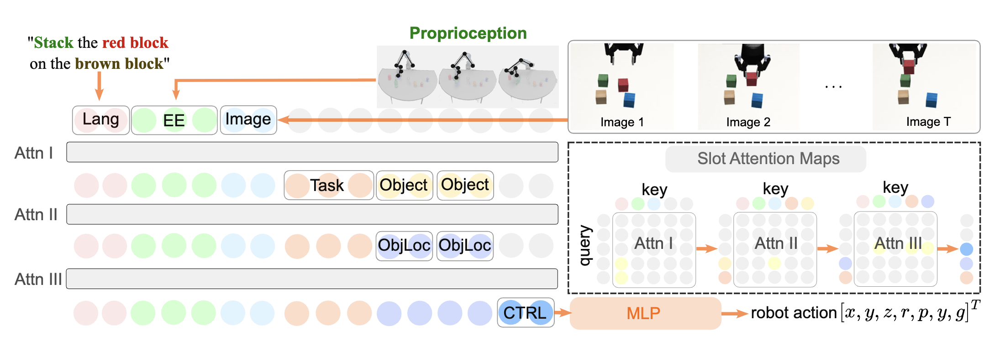

Sort Object
"Put the coke can in the bin"
Although imitation learning offers an appealing framework for policy learning, scaling it is challenging due to the lack of high-quality expert data. Previous works have addressed this by modifying model design and increasing state diversity to improve data quality, but these approaches often overlook the rich contextual information inherent in the data itself. In this paper, we propose an automated learning framework that leverages large language models (LLMs) and vision-language models (VLMs) to provide context-rich supervision for Modular Attention based imitation learning policies, denoted as AutoMA. Specifically, LLMs are used for hierarchical modular design, and VLMs provide supervision signals for the different modules. AutoMA thus leverages the capabilities of foundational models to inform the policy with rich context from the data. Experimentally, we demonstrate that AutoMA is scalable across a broad spectrum of tasks and significantly outperforms baseline models in six simulated and real-world manipulation tasks, achieving success rate improvements of up to 63.3%. Furthermore, we illustrate how AutoMA facilitates re-using the modules when transferring the policy to different robots with only 20% of the original data scale, significantly improving data efficiency.
AutoMA focuses on training a language-conditioned robot policy. It operates in two key steps: (1) Automatic Hierarchy and Module Design. In this phase, we employ LLMs and VLMs for task comprehension, which autonomously generates a hierarchy of modules relevant to the task, along with the corresponding training labels. (2) End-to-End Training of Modular Attention. Once the training data and module design are established, the second step involves training a transformer model end-to-end, embedding the modular hierarchy to guide the learning process effectively.
LLMs decompose high-level tasks, such as "stack the red block on the brown block" into modules and construct a hierarchy among them. AutoMA integrates this hierarchy using slot attention mechanisms for policy learning. For instance, the Task and Object only focus on Lang tokens in the first attention layer, the ObjLoc module attends to Image to localizing objects, and the CTRL module attends to EE, task, and ObjLoc to generate final robot actions.
For instance, in a stacking task, the high-level task is decomposed into several sub-tasks: (1) understanding the required action type, (2) identifying which object to manipulate, (3) locating the object in the image, and (4) generating the end-effector controls. As shown in the figure, these sub-tasks form a hierarchical structure where Lang, Image, and EE are considered as input modules, Task, Object, ObjLoc, and CTRL are sub-task modules.
Large Language Models (LLMs) are employed to automate the generation of task hierarchies. The goal is to analyze an expert demonstration and construct an appropriate hierarchy. As illustrated in the code below, the prompt template used in our approach consists of three main components: (1) A preamble detailing the task of hierarchy generation; (2) An in-context learning example that demonstrates the input-output format; and (3) The actual input derived from the expert demonstrations.
**Task**
You will be presented with a short video of a robot performing a task, together with a sentence describing the task.
Your task is to create an understanding of the tasks, with the goal of performing imitation learning.
The understandings will include the following:
1) According to the video and the sentence, what information should the robot pay attention to?
2) Regarding the selected information, how do they form up a hierarchical structure?
**Example**
All_modalities_available:
- I1: Natural Language Instruction
- I2: Single Image of Current Time
- I3: Joint State of Robot
- I4: End-effector location of Robot
All_output_ground_truths:
- G1: Action Trajectory
Requirements:
- No modules should have the same (input ground truth, output ground truth) pair.
APIs available:
- get_from_language(target)
- get_from_image(target)
Sentence:
- Lift up the cube.
Video:
- <frame1><frame2><frame3><frame4><frame5>
Understanding:
R1 = Query(key=I1); N1 = Decode(R1); # Get the task to perform, from language. Now R1 contains the task to perform.
R2 = Query(key=I1); N2 = Decode(R2); # Get the object to manipulate, from language. Now R2 contains the object to manipulate.
R3 = Query(key=I2); N3 = Decode(R3); # Get the location of the object, from object to manipulate and image. Now R3 contains the location of the object.
R4 = Query(key=I3); N4 = Decode(R4); # Get the location of the robot, from joint state. Now R4 contains the location of the robot.
R5 = Query(key=[R1, R3, R4]); N5 = Decode(R5); # Get the plan to perform the task, from task, object location, and robot location. Now R5 contains the plan to perform the task.
Generating labels:
- N1: get_from_language("what task to perform")
- N2: get_from_language("what object to manipulate")
- N3: get_from_image(N2)
- N4: I4
- N5: G1
**Your Response**
All_modalities_available:
- <Modality 1><Modality 2>, …, <Modality N>
All_output_ground_truths:
- <Output 1>
Requirements:
- No modules should have the same (input ground truth, output ground truth) pair.
Sentence:
- <sentence>
Video:
- <frame1><frame2><frame3><frame4><frame5>
Understanding:
The proposed modules address specific sub-tasks, such as detecting the robot's end-effector or calculating the distance between the robot and a target object. To achieve this, we leverage modern attention mechanisms to manage information flow within attention layers, ensuring the network focuses on critical inputs.
Specifically, we implement a supervised attention mechanism that allows for customized information routing (defined by the automatically generatedhierarchy), facilitating the creation of modular structures within an end-to-end neural network. The core concept behind this mechanism is that the hierarchy reveals knowledge about optimal token pairings. In other words, if the hierarchy points out key tokens that are essential for the queries, their similarity scores can be maximized to improve the network's focus and accuracy.
The figure illustrates the attention mechanism which facilitates the module ObjLoc. Queries (Q) are used to identify the most relevant keys (K), producing scores (the gray and yellow matrix) that reflect their alignment. The module ObjLoc is designed to take in the object information, and locate the object in the image. As shown in the figure, there are 2 object in the query. For each object query, the most relevant image patch (light blue) is identified, and the corresponding value, which is considered to contain the image is used as the output. In order to do so, the corresponding score in the attention map should be maximized during optimization. This process is called supervised attention. In this way, we define our first training objective, the Task Hierarchy Loss:
The task hierarchy loss Lh optimizes towards fetching the key kn for the given module’s query qn. Therefore, it can guide the attention of the sub-modules to enforce the controlled data flow.
Additionally, we also need to supervise the actual outputs of each module. To do so, we create MLPs for each module, which serve as prediction heads. The attention output token on of the n-th module is passed through MLPn, which is supervised through the sub-task label ln. We define the second training objective, the Sub-Task Loss as following:
The overall training objective is Lh + Lsub. The result of this training process is a robot policy that generates actions, which is instantiated by a transformer network and is embedded by modules that correspond for the sub-tasks.
we evaluate the effectiveness of AutoMA across multiple manipulation tasks, each with distinct setups:
"Put the coke can in the bin"
"Sort the coke can"
"Put the coke into the bin"
"Put the bread in the bin"
"Sort the coke can"
"Pick the milk and put it in the bin"
"Stack the red block on the green block"
"Put the red block on the green block"
"Place red block over green block"
"Put the red block on the green block"
"Stack blue blcok on the green block"
"Place the brown block on the red block"